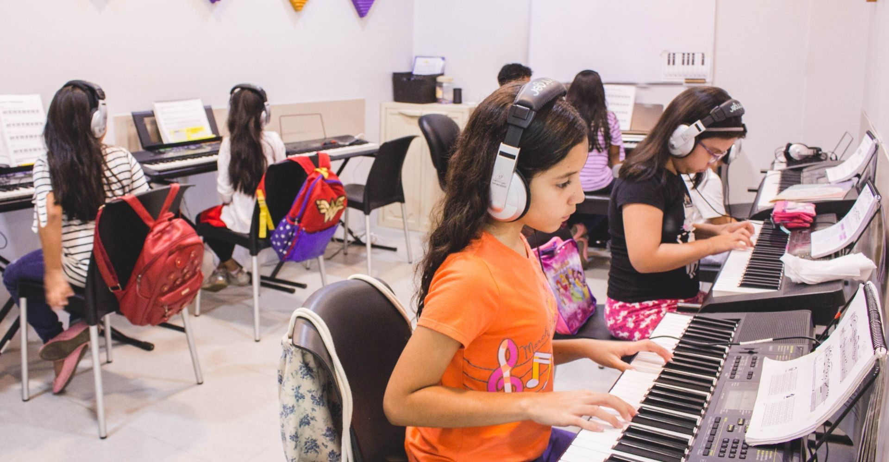

Bienvenidos
¡Bienvenidos a Academia de Música ARPAS! El lugar perfecto para dar tus primeros pasos en el mundo de la música. Si siempre quisiste aprender a tocar un instrumento o cantar pero nunca supiste por dónde empezar, estás en el lugar indicado. Diseñamos nuestras clases pensando especialmente en personas sin conocimientos previos y de todas las edades. Nuestra Propuesta Educativa En ARPAS combinamos la teoría, la práctica y el trabajo en equipo para que disfrutes del proceso desde el primer día: Instrumentos y Canto: Clases de Piano, Guitarra y Canto. Modalidad a elección: Clases presenciales en San Bernardo (Partido de La Costa) y modalidad 100% online para que aprendas desde donde estés. Formación Integral: Clases teóricas, clases prácticas y talleres de ensamble. Proyectos Integradores: Viví la experiencia de subirte a un escenario participando en nuestras presentaciones corales, muestra de solistas y ensambles de bandas musicales. ¿Empezamos? No importa tu edad ni tu nivel actual: solo necesitas ganas de aprender. Explora nuestros talleres y sumate a la comunidad de ARPAS. ¡Contáctanos hoy para reservar tu clase de prueba o pedir más información!